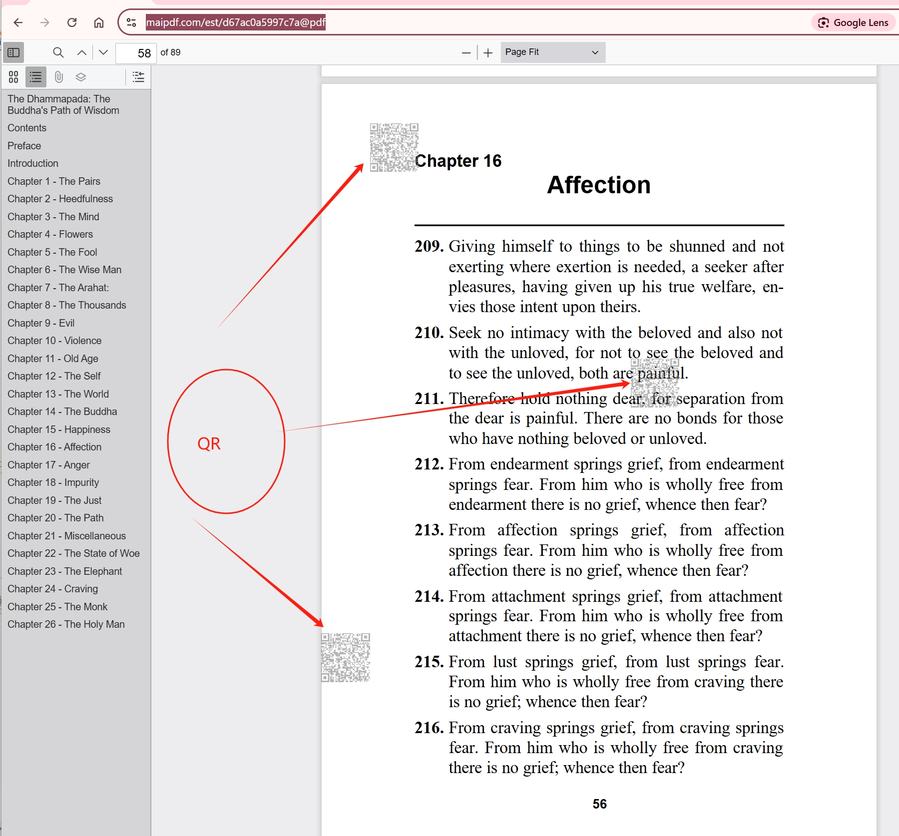

Track who views your PDF documents with dynamic watermarks and detailed access logs. Get comprehensive information about document viewers, including access time, IP address, device details, and more.
Dynamic Watermark Features
Viewer Information
- Viewer's email address
- Access date and time
- IP address
- Device information
Watermark Types
- Text watermarks
- Dynamic content
- Custom branding
- Security patterns
Tracking Features
- View count tracking
- Access duration
- Location tracking
- Device fingerprinting
Tracking Capabilities
| Tracking Element | Information Captured | Use Cases |
|---|---|---|
| Viewer Identity | Email, name, organization | Audit trails, access control |
| Access Details | Date, time, duration | Usage monitoring, security |
| Technical Data | IP, device, browser | Security analysis, fraud prevention |
| Location | Country, city, network | Geographic tracking, compliance |
Advanced Tracking Capabilities
Document Access Logs
- Comprehensive access history
- Detailed viewer information
- Access patterns analysis
- Security alerts
Security Features
- Tamper-resistant watermarks
- Real-time tracking
- Access notifications
- Security alerts
Best Practices for Document Tracking
- Enable dynamic watermarks for sensitive documents
- Regularly review access logs
- Set up security alerts for suspicious activity
- Use tracking data for security analysis
- Maintain compliance with privacy regulations
- Customize watermarks for different document types
Industry Applications
Legal Documents
- Track document access
- Monitor client viewing
- Maintain audit trails
- Ensure confidentiality
Financial Reports
- Monitor investor access
- Track confidential data
- Prevent unauthorized sharing
- Maintain compliance
Creative Content
- Protect intellectual property
- Track client reviews
- Monitor portfolio access
- Prevent unauthorized use
Ready to Track Your Documents?
Start monitoring your PDF access with MaiPDF's dynamic watermarking and tracking features:
Start Tracking DocumentsStep 5: Analyze Tracking Data
Use the tracking data collected by MaiPDF to analyze document usage patterns. This includes identifying frequently accessed documents, understanding user behavior, and improving document security based on insights.
Example of Tracking Insights
Here’s an example of tracking insights generated for a PDF:
Click here to view the PDF guide on tracking insights.
MaiPDF Tracking Features
- Monitor document access in real-time.
- Receive notifications for unauthorized access attempts.
- Generate detailed reports on document usage.